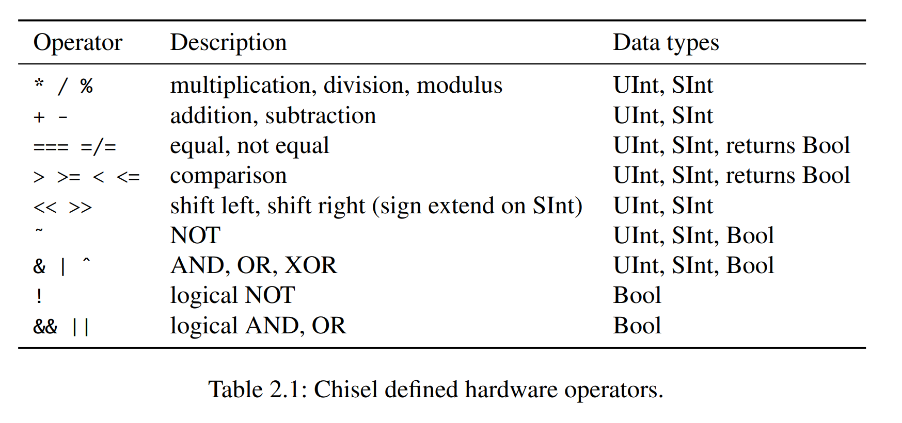
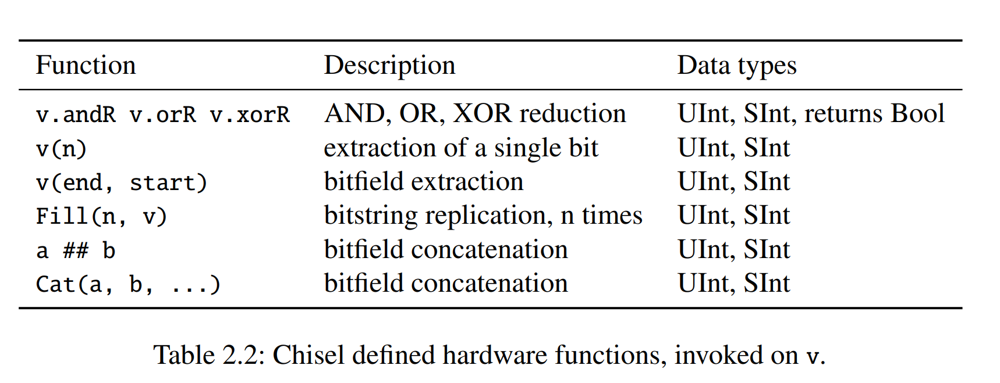

Chisel
介绍¶
Chisel是一个**硬件构建语言**（Hardware Construct Language），它是 Scala 的一个库。Chisel 的设计目标是利用 Scala 的强大特性，同时又能够生成高效的硬件描述。Chisel 的设计思想是将硬件描述看作是一个函数式的数据结构，这样可以利用 Scala 的函数式特性来描述硬件。
Chisel 教程各个章节的内容如下：
- 基本组成：基本的数据类型、组合逻辑、寄存器、Bundle 和 Vec 结构、Wire, Reg 和 IO。
- 模块：介绍 Module 类。
- 组合逻辑基本模块：一些简单的组合逻辑模块的实例。
- 时序逻辑基本模块：一些简单的时序逻辑模块的实例。
- 未完待续。
基本组成¶
数据类型¶
Chisel 有三种数据结构：Bits，UInt 和 SInt。
这三种数据结构都表示一个比特向量（vector of bits）。
Bits 是一个抽象类，UInt 和 SInt 是 Bits 的子类。
一般而言，我们不会使用 Bits。
Bits (8.W) // 8-bit vector of bits
UInt (8.W) // 8-bit unsigned integer
SInt (10.W) // 10-bit signed integer
Chisel 使用 Width 类型来表示比特向量的长度。
n.W 将 Scala 整数 n 转换为 Chisel 的 Width 类型。
如下是一些数据类型实例：
0.U // defines a UInt constant of 0
-3.S // defines a SInt constant of -3
3.U(4.W) // a 4-bit constant of 3
"hff".U // hexadecimal representation of 255
"o377".U // octal representation of 255
"b1111_1111".U // binary representation of 255, the underscore is ignored
！！！注意：定义宽度时不能遗漏 .W。 1.U(32) 并不代表 32 位宽的 1。
表达式 (32) 被解释为第 32 位，所以 1.U(32) 结果是 0。
Chisel 会自动推断常量的位宽，如果没有指定位宽，那么 Chisel 会默认使用能表示该常数的最小位宽。
例如，3.U 会被推断为 3.U(2.W)，因为 3 可以用 2 位表示。
尽管 Chisel 会推断信号所需的位宽，但在创建硬件对象时指定位宽是一个很好的习惯。
为了表示逻辑值，Chisel 定义了 Bool 类型。
以下代码将 Scala 布尔常量 true 和 false 转换为 Chisel Bool 常量。
true.B
false.B
组合逻辑¶
 
val logic = (a & b) | c
该电路描述可以用于向量，而不仅仅是与 AND 和 OR 电路组合的 Wire。
对于加法和减法，运算的结果位宽是源操作数的最大宽度；对于乘法，结果位宽是两个操作数位宽之和；对于除法和取模，通常是分子的位宽。
数据的截取、拼接、扩展等操作如下：
val sign = x(31) // sign bit of x
val lowByte = largeWord(7, 0) // low byte of largeWord
val word = highByte ## lowByte // concatenation, the same as Cat(highByte, lowByte)
寄存器¶
Chisel 中的寄存器**隐式连接**到全局时钟并在上升沿更新。 如果在声明寄存器时提供了初始化值，它将连接到全局的**同步复位**信号。
val reg = RegInit(0.U(8.W)) // 8-bit register, initialized with 0 at reset
reg := d // connect an input to the register
val q = reg // the output of the register can be used just with the name in an expression
也可以在定义寄存器的时候指定其输入：
val nextReg = RegNext(d) // register with next value of d
同时指定初始值和输入：
val bothReg = RegNext(d, 0.U) // register with next value of d, initialized with 0
具有使能信号的寄存器也很常见，Chisel 的定义如下：
val resetEnableReg = RegEnable (inVal , 0.U(4.W), enable)
第一个参数是输入信号，第二个参数是初始化值，第三个参数是使能信号。
有关
Mux的介绍，请参考多选器。
Bundle 和 Vec 结构¶
Chisel 提供了两种聚合（aggregate）数据结构来组织多个信号：Bundle 和 Vec。
Bundle 将不同类型的信号分为一组。
Vec 表示相同类型的信号（元素）的可索引集合。
Bundle¶
我们可以定义一个 Bundle 类的继承，并使用 val 定义不同字段（field）。
要使用 Bundle，我们需要用 new 创建它并将其封装到 Wire 中。
使用.符号访问其中的字段。
class Channel() extends Bundle {
val data = UInt(32.W)
val valid = Bool()
}
val ch = Wire(new Channel())
ch.data := 3.U
ch.valid := true.B
val b = ch.valid
val channel = ch // A bundle can be referenced as a whole
点表示法（dot notation）在面向对象语言中很常见，其中
x.y表示x是对象的引用，y是该对象的字段。
Vec¶
Combinational Vec¶
Vec 是通过调用带有两个参数的构造函数来创建的：元素的数量和元素的类型。Combinational Vec 需要封装成 Wire。
通过使用索引访问各个元素，封装在 Wire 中的 Vec 只是一个多路复用器（multiplexer）。
val v = Wire(Vec(3, UInt(4.W)))
v(0) := 1.U
v(1) := 3.U
v(2) := 5.U
val index = 1.U(2.W)
val a = v(index)
我们可以使用 VecInit 设置 Vec 的默认值。
val defVec = VecInit (1.U(3.W), 2.U, 3.U)
val defVecSig = VecInit(d, e, f)
Register Vec¶
我们可以使用 Vec 来定义寄存器数组。
val registerFile = Reg(Vec (32, UInt(32.W)))
registerFile(index) := dIn
val dOut = registerFile(index)
向量寄存器也可以被初始化。
初始化的值这就是寄存器复位的值。
例如，为了初始化寄存器堆（register file），我们使用带有初始值的 VecInit，并将其封装到 RegInit 中。
val initReg = RegInit(VecInit(0.U(3.W), 1.U, 2.U))
val resetVal = initReg(sel)
initReg (0) := d
initReg (1) := e
initReg (2) := f
如果我们想将一个寄存器堆所有元素的初始值设为为相同的值，我们可以使用 Scala 序列 Seq。
Seq 包含一个创建函数 fill，它用相同的值初始化序列。
VecInit 可以使用包含 Chisel 类型的 Seq 来构造。
val resetRegFile =
RegInit(VecInit(Seq.fill(32)(0.U(32.W)))) // 32-bit register file, initialized with 0
val rdRegFile = resetRegFile(sel)
Bundle 和 Vec 结合¶
val vecBundle = Wire(Vec(8, new Channel()))
class BundleVec extends Bundle {
val field = UInt(8.W)
val vector = Vec(4, UInt(8.W))
}
当我们想要一个有复位值的 Bundle 类型的寄存器时，我们首先创建该 Bundle 的 Wire，根据需要设置各个字段，然后将此 Bundle 传递给 RegInit。
val initVal = Wire(new Channel())
initVal.data := 0.U
initVal.valid := false.B
val channelReg = RegInit(initVal)
！！！注意，部分赋值在 Chisel 中是不允许的。
val assignWord = Wire(UInt(16.W))
assignWord (7, 0) := lowByte // WRONG!!!
assignWord (15, 8) := highByte // WRONG!!!
在这种情况下，应该使用 Bundle 类型。
val assignWord = Wire(UInt(16.W))
class Split extends Bundle {
val high = UInt(8.W)
val low = UInt(8.W)
}
val split = Wire(new Split())
split.low := lowByte
split.high := highByte
assignWord := split.asUInt() // casting that bundle with asUInt() to a UInt
该解决方案的一个缺点是需要知道 Bundle 字段以何种顺序合并为单个向量。
Wire, Reg 和 IO¶
UInt、SInt 和 Bits 是 Chisel 类型，它们本身并不代表硬件。
将它们封装到 Wire、Reg 或 IO 中才能生成硬件。
Wire 代表组合逻辑，Reg 代表寄存器（D 触发器的集合），IO 代表模块的连接（电路的引脚）。
任何 Chisel 类型都可以封装在 Wire、Reg 或 IO 中。
你可以通过 Scala 不可变变量来创建一个硬件。
使用 Chisel 运算符 := 将值或表达式分配（或重新分配）到 Wire、Reg 或 IO。
val number = Wire(UInt())
val reg = Reg(SInt())
number := 10.U
reg := value - 3.U
请注意 Scala 赋值运算符 = 和 Chisel 运算符 := 之间的差别。
创建硬件对象（并为其命名）时使用 Scala 的 = 运算符，但在为现有硬件对象赋值时使用 Chisel 的 := 运算符。
模块¶
Module 类¶
硬件组件（hardware components）在 Chisel 中称为模块（module）。
每个模块都继承自类 Module 并用 io 字段表示接口。
接口由 Bundle 定义，并被封装在 IO() 中。
Bundle 中包含表示模块输入和输出端口的字段。
通过将信号封装到 Input() 或 Output() 中来定义方向。
方向是从模块本身的角度来看的。
// an adder
class Adder extends Module {
val io = IO(new Bundle {
val a = Input(UInt(4.W))
val b = Input(UInt(4.W))
val sum = Output(UInt(4.W))
})
io.sum := io.a + io.b
}
// a register
class Register extends Module {
val io = IO(new Bundle {
val d = Input(UInt(8.W))
val q = Output(UInt(8.W))
})
val reg = RegInit (0.U)
reg := io.d
io.q := reg
}
由上述加法器和寄存器模块组成的计数器定义如下：
class Count10 extends Module {
val io = IO(new Bundle {
val dout = Output(UInt(8.W))
})
val add = Module(new Adder())
val reg = Module(new Register())
// the register output
val count = reg.io.q
// connect the adder
add.io.a := 1.U
add.io.b := count
val result = add.io.y
// connect the Mux and the register input
val next = Mux(count === 9.U, 0.U, result)
reg.io.d := next
io.dout := count
}
实例化的过程是使用 new 声明，并将它封装到 Module() 中。
Bulk Connections¶
为了连接具有多个 IO 端口的模块，Chisel 提供了批量连接运算符 <>。
Chisel 会将 io 字段中名称相同的端口连接起来。
如果没有匹配的名称，那么该端口会悬空。
class Fetch extends Module {
val io = IO(new Bundle {
val instr = Output(UInt(32.W))
val pc = Output(UInt(32.W))
})
// ... Implementation of fetch
}
class Decode extends Module {
val io = IO(new Bundle {
val instr = Input(UInt(32.W))
val pc = Input(UInt(32.W))
val aluOp = Output(UInt(5.W))
val regA = Output(UInt(32.W))
val regB = Output(UInt(32.W))
})
// ... Implementation of decode
}
val fetch = Module(new Fetch())
val decode = Module(new Decode())
fetch.io <> decode.io
我们也可以将子模块的端口与父模块连接。
io <> execute.io
内嵌非 Chisel 代码¶
Verilog 描述的模块可以通过 ExtModule 和 BlackBox 类内嵌在 Chisel 中。
两者都可以在定义的时候使用 Map[String, Param] ，它们在生成的 Verilog 代码中表示模块的参数。
class BUFGCE extends BlackBox(Map("SIM_DEVICE" -> "7SERIES")) {
val io = IO(new Bundle {
val I = Input(Clock())
val CE = Input(Bool())
val O = Output(Clock())
})
}
上述代码中 Map("SIM_DEVICE" -> "7SERIES") 生成的 Verilog 代码为 parameter SIM_DEVICE = "7SERIES"。
ExtModule¶
ExtModules 充当占位符，其生成的 Verilog 代码是模块的实例化（不会生成模块的定义）。
一个常见的例子是使用 ExtModule 来表示 FPGA 上的 IP。
BlackBox¶
class BlackBoxAdderIO extends Bundle {
val a = Input(UInt(32.W))
val b = Input(UInt(32.W))
val cin = Input(Bool())
val c = Output(UInt(32.W))
val cout = Output(Bool())
}
class PathBlackBoxAdder extends HasBlackBoxPath {
val io = IO(new BlackBoxAdderIO)
addPath("./src/main/resources/PathBlackBoxAdder.v")
}
上述代码中的 addPath 函数指定了 Verilog 模块的路径。
注意，HasBlackBoxPath 是 BlackBox 类的特征（trait），这意味着 class Example extends BlackBox with HasBlackBoxInline 等价于 class Example extends HasBlackBoxInline。
组合逻辑基本模块¶
组合逻辑电路¶
最简单的组合逻辑形式是布尔表达式，可以为其指定一个名称：
val e = (a & b) | c
该表达式可以在其他表达式中重用：
val f = ~e
这样组合逻辑的表达式被认为是常量（根本原因是使用了 Scala 的 val）。
使用 = 给 e 赋值会导致 Scala 编译器错误：reassignment to val。
尝试使用Chisel运算符 := 会导致错误：Cannot reassign to read-only.。
但是，当我们对组合电路进行条件更新（conditional update）时，我们可以对同一变量进行多次赋值。
val w = WireDefault(0.U)
when (cond) {
w := 1.U
} .elsewhen (cond2) {
w := 2.U
} .otherwise {
w := 3.U
}
在创建 Wire 时定义默认值可以有效防止锁存器的生成。
val number = WireDefault (10.U(4.W))
注意 .elsewhen 中的 . 不能忽略。
多选器¶
Chisel 提供了多选器的抽象：
val result = Mux(sel, a, b)
当 sel为 true.B 时选择 a，否则选择b。sel 的类型是 Chisel Bool；输入 a 和 b 可以是任何 Chisel 基本类型或聚合类型（aggregate such as bundles and vectors），只要它们是相同类型即可。
解码器¶
我们可以用真值表来描述解码器的功能。
Chisel 中的 switch 语句用来将逻辑描述为真值表。
要使用 switch 语句，我们需要导入一个Chisel包：import chisel3.util._。
import chisel3.util._
result := 0.U
switch(sel) {
is (0.U) { result := 1.U}
is (1.U) { result := 2.U}
is (2.U) { result := 4.U}
is (3.U) { result := 8.U}
}
注意，即使我们枚举所有可能的输入值，Chisel 仍然需要我们指定一个默认值。 该默认值永远不会被使用，因此会被综合工具优化掉。 这种做法的目的是避免组合电路生成锁存器。
我们也可以用 Chisel 移位操作 << 来表示解码器。
result := 1.U << sel
编码器¶
为了描述更大的编码器，我们需要编写一个硬件生成器（hardware generator）。 因此，我们需要引入 Scala 循环结构。
val v = Wire(Vec(16, UInt(4.W)))
v(0) := 0.U
// Loops i from 0 to 15
for (i <- 1 until 16) {
v(i) := Mux(hotIn(i), i.U, 0.U) | v(i-1)
}
val encOut = v(15)
编码器的输入是 hotIn，输出是 encOut。Vec 元素 0 是默认值（0），也表示 hotIn 中最低有效位 (LSB) 为 1 时的输出值。
如果 hotIn 中位置 i 处 bit 值为 1，则多选器输出为该索引 i，否则为 0。
最后，我们需要合并所有向量元素以获得单个输出。
由于当输入中对应位为 0 时向量元素为 0，因此我们可以简单地使用 OR 函数将所有元素组合起来。
我们称这个操作为归约（reduce）。
这里我们执行 OR 归约 （OR reduction）。
仲裁器¶
我们实现一个 3-bit 的仲裁器。 它由 3 条请求信号（r0-r2）和 3 条许可信号（g0-g2）组成。 仲裁器每次只会响应一个请求信号，并优先选择编号较小的请求信号。
val grant = VecInit(false.B, false.B, false.B)
val notGranted = VecInit(false.B, false.B)
grant(0) := request(0)
notGranted(0) := !grant(0)
grant(1) := request(1) && notGranted(0)
notGranted(1) := !grant(1) && notGranted(0)
grant(2) := request(2) && notGranted(1)
对于更大的仲裁器，我们需要使用循环结构。
val grant = VecInit.fill(n)(false.B)
val notGranted = VecInit.fill(n)(false.B)
grant(0) := request(0)
notGranted(0) := !grant(0)
for (i <- 1 until n) {
grant(i) := request(i) && notGranted(i-1)
notGranted(i) := !grant(i) && notGranted(i-1)
}
使用循环与手写版本的差别是，我们为最后一个请求信号（n-1）生成了 notGranted 信号。
该信号未被使用，因此综合工具会将其优化掉。
优先编码器¶
在我们最初的编码器设计中，我们假设输入是单热编码（one-hot encoded）的，这意味着只允许一位为 1。 多个位都是1的输入是非法的，会导致未定义的行为。
我们可以通过将编码器与仲裁电路相结合来解决这个问题，仲裁电路仅选择最高优先级的位。
比较器¶
比较只需要一行代码就可以完成。 因此，比较函数通常直接在其他模块中使用，而不是封装成一个单独的模块。
val equ = a === b
val gt = a > b
时序逻辑基本模块¶
计数器¶
val cntReg = RegInit(0.U(8.W))
cntReg := Mux(cntReg === 9.U, 0.U, cntReg + 1.U)
也可以用 when 来实现：
val cntReg = RegInit (0.U(8.W))
cntReg := cntReg + 1.U
when(cntReg === N) {
cntReg := 0.U
}
如果我们需要很多不同的计数器，我们可以先定义一个带有参数的函数，然后调用该函数来创建计数器。
// This function returns a counter
def genCounter (n: Int) = {
val cntReg = RegInit(0.U(8.W))
cntReg := Mux(cntReg === n.U, 0.U, cntReg + 1.U)
cntReg // the return value of the function
}
// now we can easily create many counters
val count10 = genCounter(10)
val count99 = genCounter(99)
计时器¶
数字定时器首先设定倒计时时长，然后倒计时直到为零。 计时器为零时置位完成信号。
val cntReg = RegInit(0.U(8.W))
val done = cntReg === 0.U
val next = WireDefault(0.U)
when (load) {
next := din
} .elsewhen (! done) {
next := cntReg - 1.U
}
cntReg := next
脉冲宽度调制¶
脉宽调制（PWM）是一种具有恒定周期的信号，并对该周期内信号的高电平时间进行调制。 信号为高电平的时间百分比称为占空比（duty cycle）。
def pwm(nrCycles: Int, din: UInt) = {
val cntReg = RegInit(0.U(unsignedBitLength(nrCycles -1).W))
cntReg := Mux(cntReg === (nrCycles -1).U, 0.U, cntReg + 1.U)
din > cntReg // return value
}
val din = 3.U
val dout = pwm(10, din)
我们定义了一个 PWM 生成器的函数。
该函数有两个参数：一个 Scala 整数，用于配置 PWM 的时钟周期数（nrCycles）；以及一个 Chisel Wire（din），用于给出 PWM 输出信号的占空比（脉冲宽度）。
我们使用函数 unsignedBitLength(n) 来指定计数器 cntReg 所需的位数（对于无符号数n，至少需要 \(\lfloor\log_2\rfloor(n)+1\)位）。
Chisel 还有一个函数 signedBitLength 用于提供有符号数的位数。
移位寄存器¶
移位寄存器的一个使用场景是数据的串并转换。 最简单的移位寄存器用 Chisel 很容易实现。
val shiftReg = Reg(UInt(4.W))
shiftReg := shiftReg(2, 0) ## din
val dout = shiftReg(3)
串进并出的移位寄存器实现如下：
val outReg = RegInit(0.U(4.W))
outReg := serIn ## outReg (3, 1)
val q = outReg
并进串出的移位寄存器实现如下：
val loadReg = RegInit(0.U(4.W))
when (load) {
loadReg := d
} otherwise {
loadReg := 0.U ## loadReg(3, 1)
}
val serOut = loadReg(0)
内存¶
Chisel 提供了 SyncReadMem 用来快速构建寄存器阵列。
如下是一个同步读写内存的例子：
class Memory() extends Module {
val io = IO(new Bundle {
val rdAddr = Input(UInt(10.W))
val rdData = Output(UInt(8.W))
val wrAddr = Input(UInt(10.W))
val wrData = Input(UInt(8.W))
val wrEna = Input(Bool())
})
val mem = SyncReadMem(1024, UInt(8.W))
io.rdData := mem.read(io.rdAddr)
when(io.wrEna) {
mem.write(io.wrAddr, io.wrData)
}
}
一个有趣的问题是，当在同一时钟周期内读写同一地址时，读的返回值是什么。 如果我们想读出新写入的值，我们可以构建一个前递（forward）电路，检测地址是否相等并前递写入的数据。
class ForwardingMemory() extends Module {
val io = IO(new Bundle {
val rdAddr = Input(UInt(10.W))
val rdData = Output(UInt(8.W))
val wrAddr = Input(UInt(10.W))
val wrData = Input(UInt(8.W))
val wrEna = Input(Bool())
})
val mem = SyncReadMem (1024, UInt(8.W))
val wrDataReg = RegNext(io.wrData)
val doForwardReg = RegNext(io.wrAddr === io.rdAddr && io.wrEna)
val memData = mem.read(io.rdAddr)
when(io.wrEna) {
mem.write(io.wrAddr , io.wrData)
}
io.rdData := Mux(doForwardReg, wrDataReg, memData)
}